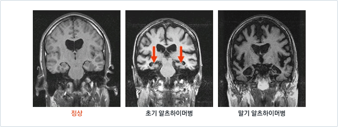
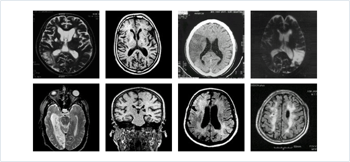
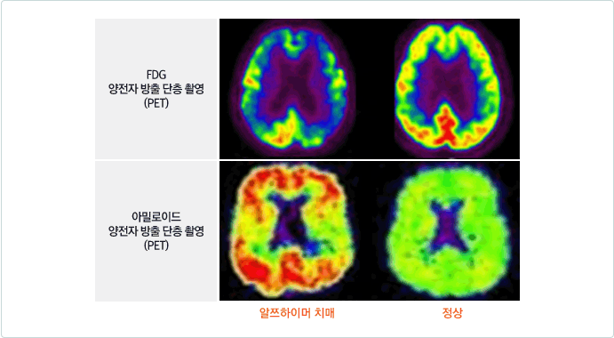

조기발견의 중요성
조기발견을 통해 치매환자 10명 중 1-2명은 완치될 수 있습니다. 다양한 치매의 원인 중 뇌종양, 심각한 우울증, 갑상선 질환, 약물 부작용, 영양문제 등은 일찍 발견해서 치료하면 회복될 수 있습니다. 또한 치매의 원인 중 20~30% 정도를 차지하는 혈관성 치매는 고혈압이나 당뇨, 심장 질환 등 혈관성 위험 인자의 관리와 적절한 치료제의 사용으로 악화를 방지할 수 있습니다. 치매의 대부분의 원인을 차지하는 알쯔하이머병도 조기에 발견하여 치료하면 인지기능의 저하를 더 늦출 수 있는 것으로 알려져 있습니다. 따라서 치매의 조기 발견과 치료가 중요하며, 이미 치매가 진행되신 분이라 할지라도 적절한 평가과 치료를 통해 상당히 호전될 수 있습니다.
- 큰 치료 효과를 기대할 수 있습니다.
치매의 진행을 늦출 수 있는 약물치료는 빨리 시작할수록 효과가 좋습니다. 초기에 약물을 사용하면 건강한 환자의 모습을 가능한 한 오래 유지할 수 있습니다.
- 체계적 치료와 관리로 환자의 수명을 연장시킬 수 있습니다.
고혈압, 당뇨 등 치매를 악화시키거나 이차적 치매를 유발할 수 있는 위험인자를 체계적으로 관리하면 환자의 수명을 유의미하게 증가시킬 수 있습니다.
- 병의 악화로 인한 다양한 문제에 미리 대처할 수 있습니다.
환자의 판단력이 상실되기 전에 치매를 조기발견하면 유산상속과 같은 경제적 혹은 법적인 문제에 미리 대처할 수 있습니다.
조기발견을 위한 방법 : 기억력 저하를 의심하라
조기발견을 위해서는 무엇보다 치매를 의심하는 것이 중요합니다.
기억력이 현저하게 저하된 경우 그냥 '나이가 들어서' 라고 생각하지 말아야 합니다. 당신(혹은 당신의 부모님)의 기억력 저하가 의심된다면, 아래의 질문들을 체크해 보세요. 몇 개 항목에서 과거에 비해 현저한 저하가 있다면 치매 전문의사와 상담하세요.
- 며칠 전에 나누었던 대화 내용을 기억하는 것은 어떻습니까?
- 최근에 했던 약속을 기억하는 것은 어떻습니까?
- 최근에 주변에서 일어났던 일을 기억하는 것은 어떻습니까?
- 가스불이나 전깃불을 켜놓고 끄는 것을 잊어버리는 것은 어떻습니까?
- 새로 마련한 가전제품이나 기구의 사용법을 익히는 능력은 어떻습니까?
- 중요한 제삿날이나 기념일(배우자의 생일, 결혼기념일, 종교행사일 등)을 기억하는 것은 어떻습니까?
- 거스름돈을 계산하거나, 돈을 정확히 세서 지불하는 것은 어떻습니까?
- 이야기 도중에 머뭇거리거나 말문이 막히는 것은 어떻습니까?
- 이야기 도중에 물건의 이름을 정확히 대는 정도는 어떻습니까?
- 가까운 사람(자식, 손자, 친한 친구 등)의 이름을 기억하는 것은 어떻습니까?
- 가까운 사람에 관한 사항, 즉 사는 곳이나 직업 등을 기억하는 것은 어떻습니까?
- 자신의 주소나 전화번호를 기억하는 것은 어떻습니까?
- 전화, 가스레인지, 텔레비전 등 집안에서 늘 사용하던 기구를 다루는 능력은 어떻습니까?
- 어떤 옷을 입고 나갈지, 저녁식사에 무엇을 준비할지 등 일상적인 상황에서 결정을 내리는 능력은 어떻습니까?
조기발견을 위한 방법: 치매 전문가를 찾아라
치매가 의심된다면 치매클리닉을 방문해서 전문가의 진단을 받아보세요. 이때 병원을 방문 전에 아래 사항들을 숙지하시기 바랍니다.
- 반드시 환자를 잘 아는 보호자가 동반해야 합니다.
치매환자는 자신의 기억력 저하를 부인하는 경우가 많습니다. 또한, 치매환자는 정상적인 의사소통이 불가능한 경우가 많아 가족 등 정보제공자와의 면담이 필수적입니다.
- 거주지 인근의 전문클리닉을 찾으세요.
치매는 장기간 치료가 필요한 만성질환입니다. 지속적으로 치료받을 수 있도록 환자가 거주하고 있는 인근의 치매전문클리닉을 찾는 것이 좋습니다.
- 조기진단을 위해 병원에 가면 의사는 아래의 질문들을 합니다. 환자의 상태를 미리 파악해 두세요.
- 환자는 어떤 증상을 보이나요?
- 환자의 증상은 언제 시작했습니까?
- 환자의 증상은 어떻게 변해왔습니까?
- 환자가 현재 어떤 병을 앓았으며 어떻게 치료했습니까?
- 환자는 현재 어떤 약을 먹고 있습니까?
- 환자는 치매의 가족력이 있습니까?
※ 현재 각 보건소와 지역 거점병원에서는 치매 무료 조기검진 사업을 실시하고 있습니다. 자세한 내용은 조기검진사업을 참고하세요. 치매클리닉에서는 여러 가지 검사를 실시하고 그 결과를 종합해 치매여부 및 원인 진단을 내립니다. 이때 실시하는 여러 검사들에 대해 충분히 이해하는 것이 필요합니다.
※ 자세한 내용은 치매 진단과정을 참고하세요.
* 본문에 관한 자세한 내용을 보시려면 자료 다운을 클릭해 주세요.
제목 : 치매 검진을 준비하는 요령 /저자: 가톨릭대학교 서울성모병원 정신과 이창욱교수

치매는 매우 다양한 원인에 의해 생기기 때문에 한 가지 검사로 진단을 내릴 수 없습니다. 따라서 전문의에게 의뢰되면 다음과 같은 검사를 받게 되며 이를 통해 진단을 내리게 됩니다.
1. 첫째, 자세한 병력 조사입니다.
병력조사란 언제부터 증세가 시작되었고, 어떤 증세가 주로 나타났으며, 지금까지 어떤 변화를 겪어왔는지를 자세히 알아보는 과정을 말합니다. 첨단 기계를 사용하는 검사과정 보다 실은 이런 문진 과정이 훨씬 더 중요합니다. 일단 증상에 대한 전반적인 파악이 되면 치매의 원인이 될 수 있는 질환이 혹시 있는지의 여부도 묻게 됩니다. 고혈압, 당뇨, 고지혈증, 체중의 급격한 변화, 과거의 신체 질환들, 뇌 손상 여부, 알코올이나 다른 약물에 대한 중독 여부 등이 정확한 진단에 중요한 단서를 제공할 수 있습니다.
2. 둘째, 직접 진찰하는 과정입니다.
이 과정은 신체검사, 신경학적 검사, 정신상태 검사 등 세 가지로 이루어지는데, 혈압, 체온, 맥박 등의 측정과 전신의 각 부분에 대한 진찰을 하고, 이어서 감각, 운동 신경이나 근육의 위축, 보행능력, 반사운동 등 각종 신경학적 기능도 평가하게 됩니다. 정신상태 검사는 우울증과 불안, 공포증, 망상 등의 정신현상을 평가하는 과정을 말합니다.
3. 검사실 검사 과정
이렇게 위의 두 과정을 거친 후, 대부분의 경험 많은 치매 전문가들은 환자가 치매를 앓고 있는지의 여부, 또 치매가 있다면 어떤 종류의 치매인지를 개략적으로 추정할 수 있지만, 확진을 위해서는 세 번째 과정, 즉 각종 검사 과정이 필요합니다. 검사 과정은 크게 세 종류로 구분됩니다. 신체질환의 여부를 확인하기 위한 검사실 검사, 뇌 기능을 평가하기 위한 신경인지기능 검사, 뇌의 구조와 기능을 보기 위한 뇌영상 검사입니다.
가. 검사실 검사
검사실 검사에는 혈액검사, 가슴 X-ray 검사, 소변검사, 심전도, 등이 포함됩니다. 기본적인 혈액검사로 중요한 신체기능을 평가하고, 매독반응, 갑상선 기능, 비타민 결핍 여부 등도 조사합니다. 가끔은 뇌의 감염 등을 확인하기 위해 뇌척수액 검사를 해야 하는 경우도 있으며, 뇌파 검사를 해야 할 경우도 있습니다.
나. 신경인지기능 검사
신경심리검사는 문답식 혹은 설문지 방식으로 기억력 등의 인지기능을 세밀하게 평가하는 것으로 환자의 인지기능 정도를 객관적으로 평가 할 수 있습니다. 신경심리검사는 다음과 같은 목적에서 시행됩니다. 첫째, 환자의 인지기능 감퇴가 정상적인 노화 과정에 의한 것인지 아니면 치매에 해당하는 인지적 결함인지를 구별하는데 참고하기 위해 시행됩니다. 둘째, 환자의 인지기능의 감퇴가 치매에 의한 것으로 판단된 경우 치매를 일으키는 원인 질환을 구분하는데 참고하기 위해 시행됩니다. 셋째, 치료 시작 전에 환자의 인지기능 수준을 파악해 둠으로써 향후 치료 반응 정도를 파악하는데 참고하기 위해 시행합니다. 이러한 목적의 달성을 위해 신경심리검사에는 기억력, 언어능력, 주의집중력, 판단능력, 계산능력, 수행능력, 시공간 파악력 등 다양한 인지영역에 대한 광범위한 평가가 포함됩니다.
다. 뇌 촬영 검사
뇌 촬영은 치매 진단에 많은 도움을 주는 매우 유용한 검사입니다. 이 중에서 CT와 MRI가 뇌의 모양을 알아보는 검사라면, PET와 SPECT는 뇌의 기능을 측정하는 검사입니다. 요즈음은 MRI를 많이 활용하는데, 사진이 세밀하여 미세한 변화도 파악할 수 있기 때문입니다. PET나 SPECT는 뇌의 모양을 보는 데에는 CT 나 MRI보다는 못하지만, 신경세포가 얼마나 활발하게 활동하고 있는지, 그 기능을 알 수 있다는 점에서 치매의 조기 진단에 도움을 줍니다.
* 본문에 관한 자세한 내용을 보시려면 자료 다운을 클릭해 주세요.
제목 : 치매 진단과정 개관/저자: 강릉 동인병원 정신건강의학과 김태희과장
현재 치매의 원인을 확인하고 최적의 치료관리를 위해 뇌영상 촬영의 중요성이 크게 강조되고 있습니다.
일반적 뇌영상검사는 뇌자기공명영상(MRI), 뇌컴퓨터단층촬영(CT) 등의 구조적 뇌영상검사와 양자방출단층촬영(PET), 단일광자방출촬영(SPECT), 기능성 자기공명영상촬영 (f-MRI) 등이 기능적 뇌영상검사로 구분됩니다.
구조적 뇌영상 검사
MRI와 CT는 뇌의 구조나 모양을 살펴보기 위한 검사로 근래에는 CT보다 해상도가 높은 MRI를 널리 사용합니다.
MRI 촬영결과를 보면 알쯔하이머병 초기에는 구조적 뇌영상 검사상 해마 (hippocampus), 후각속구역 (entorhinal cortex)을 포함하는 내측 측두엽(medial temporal lobe)의 용적 감소가 일관되게 보고되고 있으며, 진행시 광범위한 뇌의 위축, 뇌실 확대 등의 구조적 변화가 나타납니다

혈관성 치매에서 나타나는 대혈관 경색, 전략적 단일 경색, 기저핵과 전두엽 백질의 다발성 소공 경색, 광범위한 백질 병변(전체 백질의 1/4 이상을 차지하는 병변), 또는 이러한 소견들의 공존 등의 뇌혈관질환 소견을 확인할 수 있습니다.

최근 갑자기 상태가 악화되어 뇌경색이 의심되는 경우는 확산영상(diffusion image)을 추가로 촬영하기도 합니다.
기능적 뇌영상 검사
방사선동위원소를 이용하여 뇌의 혈류량 또는 뇌의 포도당 대사능력 등을 측정함으로써 뇌의 각 부위의 기능 이상을 확인할 수 있습니다. 기능적 검사중하나인 FDG-PET은 SPECT에 비해 공간 해상도가 높고 Fluoro-2-deoxy-D-glucose (FDG)를 사용하여 대뇌 국소 포도당 대사를 측정하는데 이는 신경세포 및 시냅스의 활성도를 반영하고 포도당 대사의 감소는 알쯔하이머병의 병리 소견인 신경섬유매듭의 증가와 관련성이 보고되고 있습니다. 초기 알쯔하이머병의 경우 구조적 뇌영상검사에서 별다른 이상이 나타나지 않는 경우라도 PET 검사상 양측 두정엽의 대사 감소 소견을 관찰할 수도 있습니다. 또한 알쯔하이머 임상 증상이 나타나기 이전에 뇌 속 아밀로이드베타의 축적상황을 파악하는 아밀로이드 PET 영사검사가 있습니다.

* 본문에 관한 자세한 내용을 보시려면 자료 다운을 클릭해 주세요.
제목 : 치매 진단과 치료에 이용되는 뇌 영상 검사 /저자: 조선대학교병원 정신과 추일한교수
검사 이유
뇌의 질병인 치매를 검사하는데 왜 신체질환을 검사하는지 궁금하신 분들이 많으실 것입니다. 그 이유로는 크게 두 가지를 들 수 있습니다.
- 치매 원인 규명
다양한 신체 질환이 뇌 기능에 영향을 미칠 수 있습니다. 이 중 완치가 가능한 질병인지 여부를 확인하여 적절하게 치료하면 약 10% 내외의 환자는 크게 호전될 수 있습니다.
- 알콜 및 독소: 알콜성 간염 및 알콜성 치매, 기타 약물 및 독소 중독
- 감염성 질환: 크루츠펠츠-야곱병(Creutzfeldt-Jakob Disease, CJD), 에이즈(AIDS), 기타 감염성 질환 등
- 영양결핍: 비타민 결핍
- 염증성 질환: 루푸스, 다발성 경색증 등
- 대사성 질환: 갑상선기능저하 등
- 치매의 치료관리를 위해서 동반질병에 대한 평가가 필요합니다.
직접적인 치매 유발인자는 아니지만 환자의 상태를 급격하게 악화시키거나 이차적인 치매를 발생시킬 위험이 있는 당뇨병 등의 여부 및 현재 상태를 파악하여 적절하게 치료관리하기 위한 기초 검사가 필요합니다.
일반적으로 많이 실시하는 검사로는 다음과 같은 것들이 있습니다.
혈액검사
- 혈액검사
- 일반혈액검사 (Complete blood count, CBC)
- 간기능검사 (Liver function test)
- 신장기능검사 (Renal function test)
- 갑상선기능검사 (Thyroid function test)
- 전해질 검사 (Electrolyte test)
- 혈당 검사
- 지질 검사
- 혈청 매독검사 (VDRL)
- AIDS 검사 (HIV test)
- 비타민 검사 ( 비타민 B12, 엽산 )
- 소변검사
- 대변검사
- 가슴 X-ray1
- 뇌파검사 (EEG)
- 심전도 검사
* 본문에 관한 자세한 내용을 보시려면 자료 다운을 클릭해 주세요.
제목 : 치매와 진단의학적 검사
섬망(delirium)이란
갑자기 의식상태가 저하되어 발생하며 대부분 안절부절 못하고 잠을 자지 않으며 환각, 엉뚱한 말 등의 과도한 활동을 보이는 상태를 말합니다.
흔한 섬망의 원인
- 감염, 열병, 저산소증, 저혈당증, 약물 중독 및 금단, 간성 뇌증 등과 같은 대사장애감염, 열병, 저산소증, 저혈당증, 약물 중독 및 금단, 간성 뇌증 등과 같은 대사장애
- 뇌종양, 뇌졸중, 외상성 뇌손상, 간질 발작 후 등과 같은 중추신경계 이상
치매와 섬망의 관계
| 치매와 비슷한 점 | 치매와 다른점 |
|---|---|
|
|
※ 치매환자에게 섬망이 동반되는 경우도 있으므로 세밀한 병력과 경과 관찰을 통해서만 감별이 되는 경우도 있습니다.
섬망의 치료
- 섬망의 원인을 찾아 교정합니다.
- 섬망을 악화시킬 수 있는 환경 요인을 교정합니다.
밤낮의 단서가 될 수 있는 규칙적인 조명 변경, 시력이나 청력 보조, 친숙한 물건이나 가족이 병실에서 간호하며 조용한 환경을 유지해 주는 것이 중요합니다.
- 약물치료를 병행합니다.
섬망으로 인해 초조, 불안 등이 심하거나 혼란된 행동이 심하게 파괴적인 경우 소량의 항정신병약물으로 도움을 받을 수 있으며 환자의 문제행동으로 발생될 수 있는 사고의 위험성을 줄여줍니다. 때로는 수면 주기의 변동으로 불면증을 호소하는 경우 나 알코올 금단으로 인해 발생된 섬망의 경우 작용시간이 짧은 벤조디아제핀제를 사용하기도 합니다.
* 본문에 관한 자세한 내용을 보시려면 자료 다운을 클릭해 주세요.
제목 : 치매와 섬망의 구별 /저자: 동국대학교경주병원 정신과 곽경필교수
노인 우울증의 중요성
- 우울증상은 전체 노인의 10% 내외에서 보고되고 이 중 치료가 필요한 우울증상도 약 5% 내외로 보고되는 비교적 흔한 증상입니다.
- 우울증상을 방치할 경우 일상생활 기능 저하, 자살 등 매우 심각한 결과를 초래할 수 있습니다.
- 우울증은 가족과 친구 등 주변의 지지와 격려, 전문가의 상담, 약물 치료 등을 통해 증상을 크게 호전시킬 수 있습니다.
치매와 우울증의 관계
- 노인의 우울증은 치매의 위험인자가 될 수 있습니다.
여러 연구를 통해 우울증을 앓은 적이 있는 노인은 그렇지 않은 노인에 비해 치매가 발생할 가능성이 2-3배 가량 높다고 알려져 있습니다.
- 치매는 우울증상이 쉽게 동반됩니다.
치매에 우울증 동반시 치매를 더욱 악화시킬 수 있어 치매 환자에게 더욱 인지 저하를 유발하여 혼란스럽고, 불안, 초조하게 할 수 있으며 공격성, 사회적 위축, 식사 거부, 배회, 자해 위험 등의 심각한 행동상의 문제를 유발할 수도 있으며 가족 부담을 증가시키며 입원 또는 입소의 원인이 되기도 합니다.
- 노인의 우울증은 인지기능저하를 초래할 수 있습니다.
노인성 우울증에서는 기억력 저하, 주의력 저하 등의 인지기능장애가 흔하게 나타나기 때문에 치매로 오인되는 경우가 많습니다. 노인성 우울증에서 나타나는 치매와 유사한 인지기능장애를 치매와 구별하여 진짜 '가성치매(pseudodementia)'라고 부르는데 이러한 상태가 되면 기억력, 집중력, 판단력 등의 인지기능이 떨어져 행동에까지 영향을 미치게 됩니다.
- 증상이 서서히 진행되었는지
- 인지기능 저하 외에 우울한 기분, 의욕저하, 식욕저하, 불면, 초조감, 신체증상 등의 우울증 증상이 존재하는지
- 객관적 인지기능 검사와 노인이 호소하는 증상이 일치하는지
- 신경심리검사 검사 과정과 결과에서 동기 저하가 관찰되는지
등을 통해 진단적 힌트를 얻을 수 있습니다.
하지만 치매와 우울증은 이분법적으로 구분되지 않는 경우가 흔하기 때문에 전문가의 평가와 치료를 받아야 합니다.